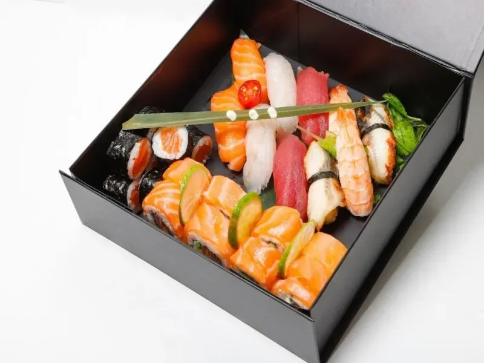

Tavola calda giapponese · Torino
Mangi quanto vuoi.
Paghi una volta sola.
Centoventi piatti preparati al momento, due ore al tavolo, un cartellino solo. Come nelle tavole calde di una volta: il prezzo è scritto grande, il resto lo porta la cameriera.
pranzo · a personaeuro

consigliato
食品サンプル · La vetrina
I campioni in vetrina.
Da noi sono foto vere, non plastica. Tocca un piatto per leggere la scheda.
Incluso nella formula · giri illimitati
お品書き · Cartellino
Il cartellino
dei prezzi.
| Adulti | Lun–Ven · 12:00–15:00 | |
|---|---|---|
| Bambini 4–8 | fino a 3 anni non pagano | |
| Sabato e festivi | anche a pranzo | |
| Da bere | alla carta | Asahi, Sapporo, sake, tè |
- 120 piatti à la carte
- Due ore al tavolo
- Acqua e caffè inclusi
- Max 5 piatti a persona per giro
スタンプ · La tessera
Ogni giro un timbro.
Tocca la tessera: è così che va la serata.
MIZUtessera del tavolo · 2 ore
Giro 1: ordina fino a 5 piatti a persona. Arrivano freschi, poi si ricomincia.
- 1. Si ordina dal tavolo, cinque piatti a testa per giro.
- 2. Quando arriva l’ultimo, si può già chiedere il giro dopo.
- 3. Due ore. Se il tavolo è libero, nessuno guarda l’orologio.
- 4. I piatti lasciati pieni si pagano alla carta: il pesce non si butta.
Dove
Corso Vittorio Emanuele II 72,
Torino.
- Tutti i giorni
- 12:00–15:00 · 19:00–23:30
- Telefono
- +39 011 880 2600
- Metro
- Porta Nuova · 3 minuti a piedi
* Il 1978 è l’anno in cui è nato lo stile. Noi siamo del 2016.